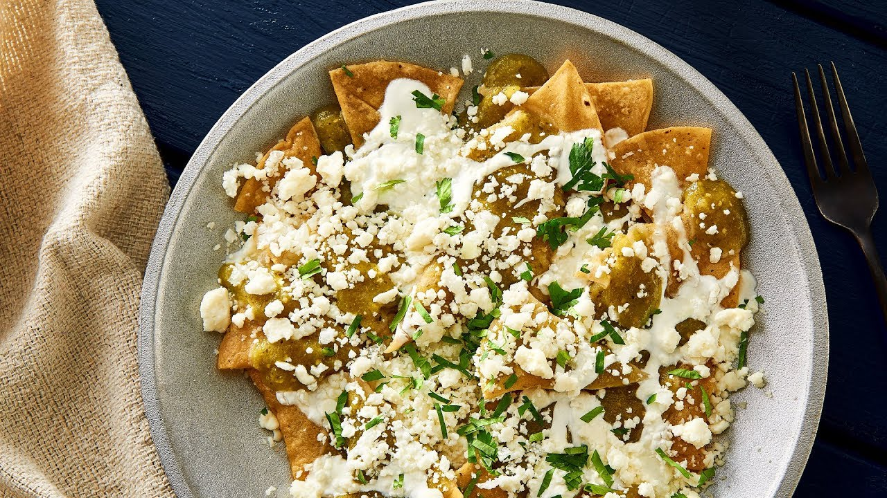
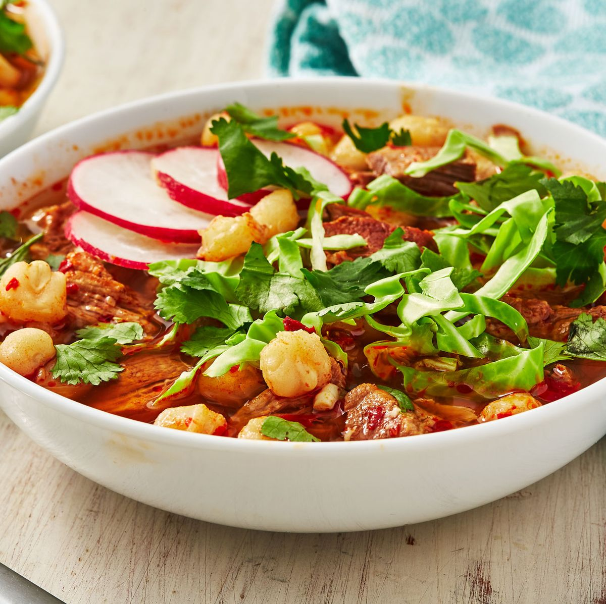

Menú Exclusivo
tacos al pastor
los tacos al pastor son hechos de carne de cerdo marinados en salsa de chile la carne se pone al asador verticalmente, adobada con una piña y se deja asar lentamente durante horas.

Valor: $10pesos
chilaquiles
los chilaquiles estan elaborados por:totopos,salsa verde o salsa roja, pollo queso crema cebolla y cilantro.
Valor: $34.90 a 55 pesos
pozole
el pozole esta hecha a bases de granos de maiz nixtamalizados, carnes, vegetales, servido con jugo de limon, salsa picante, cebolla y oregano .
Valor: $400 a 800 pesos
